일반인을 위한 모의 투자 서비스 anthill의 첫 단계는 차트다. 업비트와 11개 단위 모두에서 마감 캔들이 값까지 같고, 진행 중 캔들은 체결이 있는 초마다 움직인다. 아래 숫자와 화면은 모두 업비트 실데이터로 돌아가는 전체 스택에서 직접 측정하고 캡처한 것이다.
anthill은 일반인이 가상자금으로 주요 주식과 코인을 사고파는 공개 모의 투자 서비스다. 최종 차별점은 캔들에 마우스를 올리면 그 시간대 커뮤니티 반응을 종합해 보여 주는 것이다. 커뮤니티 데이터는 제휴와 법률 검토가 필요해 마지막 단계로 미뤘다.
차트를 먼저 한 이유는 차트가 틀리면 그 위에 얹을 모의 체결, 수익률, 커뮤니티 반응이 모두 신뢰를 잃기 때문이다. 그래서 성공 기준은 하나다. 업비트 화면의 캔들과 시가·고가·저가·종가·거래량이 시간 단위와 무관하게 정확히 일치해야 한다.
업비트 실데이터로 돌아가는 전체 스택(브라우저 → 게이트웨이 → 시세 서비스 → 어댑터 → 업비트)을 실제 사용자처럼 조작했다. 9개 시나리오가 모두 기대대로 동작했다.
캡처: 2026-11-08 15:17~15:23 KST(토요일 오후). scripts/e2e-capture.mjs가 헤드리스 Chrome을 조작해 단계마다 화면을 남기고, 화면에 보인 값을 업비트 REST와 자동으로 대조한다. 업비트 화면은 같은 시각 upbit.com에서 캡처했다.
| # | 시나리오 | 한 일 | 결과 |
|---|---|---|---|
| 1 | 첫 화면 | 접속 | KRW-BTC 1분봉과 300종목 목록(24시간 거래대금 순) 통과 |
| 2 | 실시간 갱신 | 진행 중 캔들 지켜보기 | 4.1초 만에 종가 103,363,000 → 103,368,000, 거래량 0.11534321 → 0.11631062 통과 |
| 3 | 업비트와 같은 캔들 | 14:36 캔들을 십자선으로 가리킴 | 6개 값 모두 업비트 화면·REST와 같음 통과 |
| 4 | 단위 전환 | 일봉·주봉 선택 | 일봉 2026-11-08, 주봉 2026-11-02(월) 시작 통과 |
| 5 | 과거 스크롤 | 1분봉을 왼쪽 끝까지 줄임 | 이전 200개를 요청(to=2026-11-08T03:02:00Z)해 앞에 붙임 통과 |
| 6 | 검색 | "이더" 입력 | 이더리움 등 6종목 통과 |
| 7 | 거래 드문 종목 | KRW-USDG 1분봉 | 빈 분을 건너뛰고 붙여 그림, 업비트와 같은 모양 통과 |
| 8 | 재연결 | 게이트웨이를 20초 멈춘 뒤 다시 띄움 | 다시 띄운 지 10초 만에 갱신 재개 통과 |
| 9 | 휴대폰 폭 | 390px 화면 | 가로 스크롤 없음 통과 |
접속하면 KRW-BTC 1분봉이 열리고, 오른쪽에 300종목이 24시간 거래대금 순으로 나온다. 상승은 빨강, 하락은 파랑(국내 관례)이다. 범례의 숫자는 서버가 준 문자열을 그대로 보여 준다.
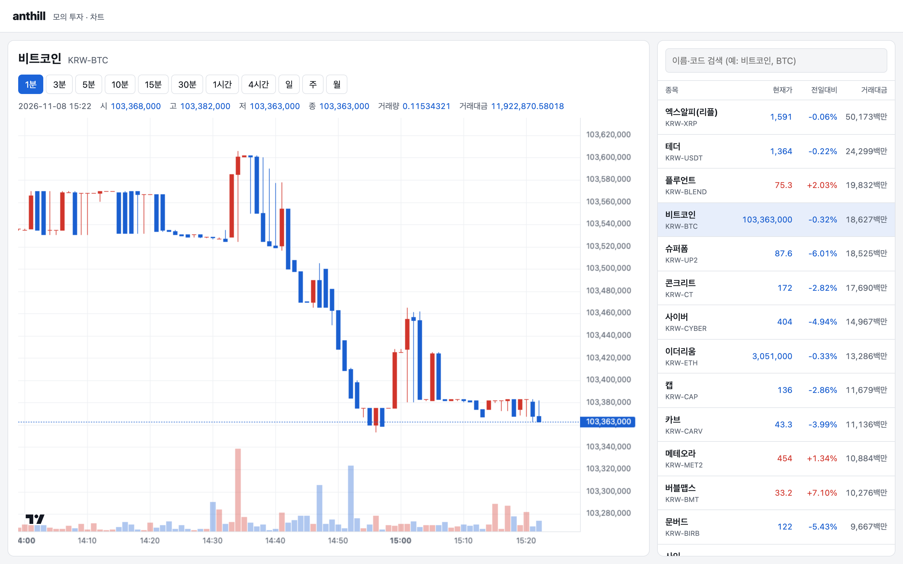
같은 15:22 캔들을 두 번 캡처했다. 체결이 들어오자 4.1초 만에 종가와 거래량이 바뀌었다. 체결이 없는 초에는 값이 그대로다(업비트도 같다).
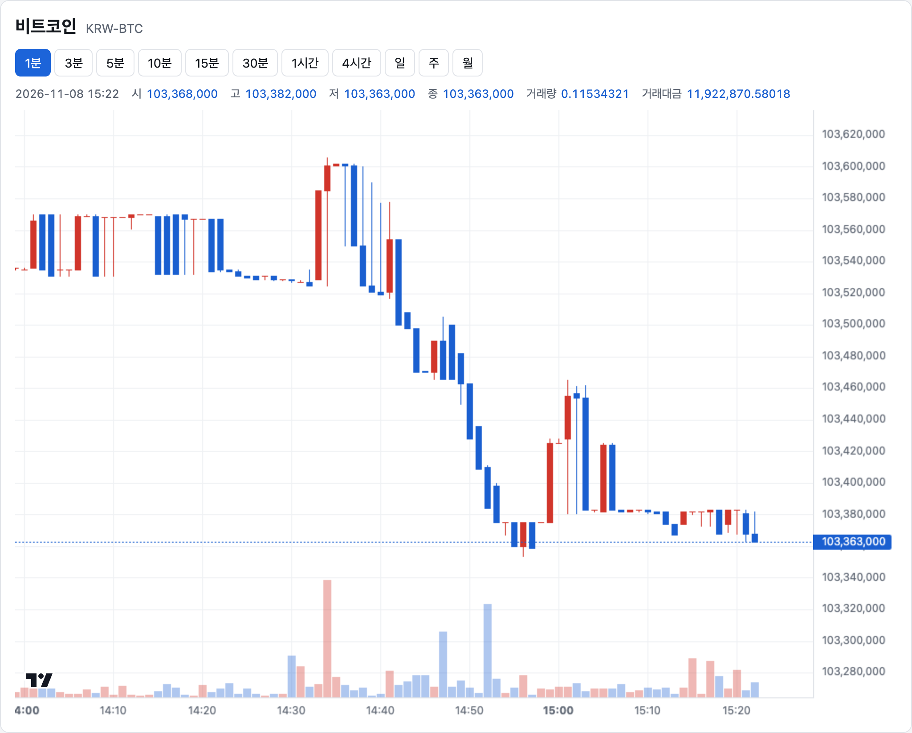
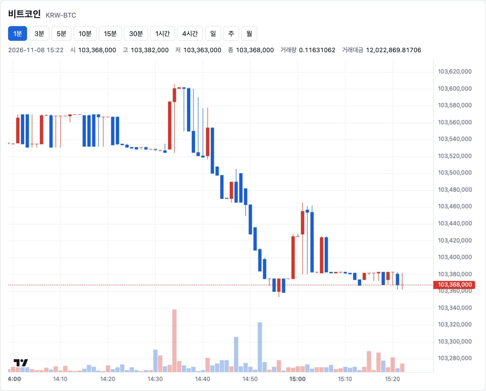
업비트 화면에서 십자선이 가리킨 14:36 캔들을 우리 화면에서도 가리켰다. 업비트 화면에는 거래대금이 없어 REST로 확인했다. 자릿수만 다르고 값은 모두 같다.
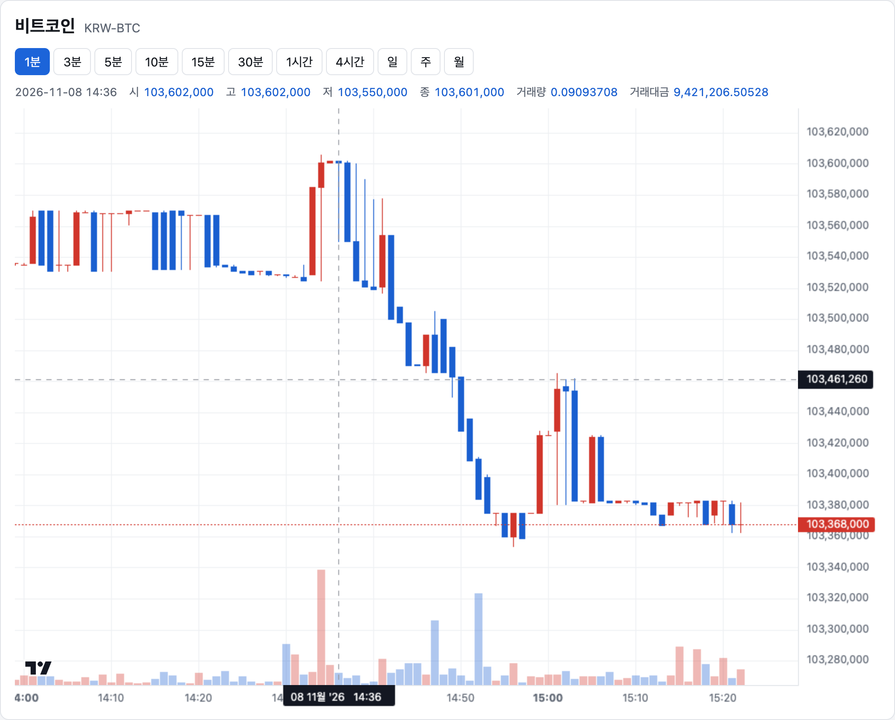
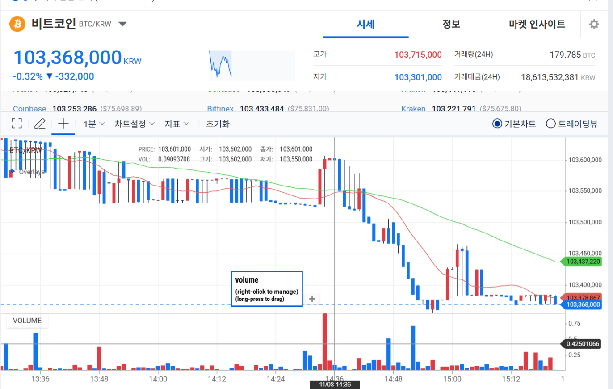
| 값 | 우리 화면 | 업비트 화면 | 업비트 REST |
|---|---|---|---|
| 시가 | 103,602,000 | 103,602,000 | 103602000.00000000 |
| 고가 | 103,602,000 | 103,602,000 | 103602000.00000000 |
| 저가 | 103,550,000 | 103,550,000 | 103550000.00000000 |
| 종가 | 103,601,000 | 103,601,000 | 103601000.00000000 |
| 거래량 | 0.09093708 | 0.09093708 | 0.09093708 |
| 거래대금 | 9,421,206.50528 | (표시 없음) | 9421206.50528000 |
일봉은 09:00 KST(UTC 00:00)에, 주봉은 월요일에 시작한다. 진행 중인 일·주봉도 1분봉과 같은 메시지로 함께 움직인다.
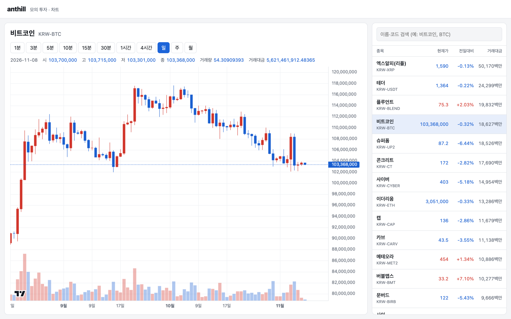
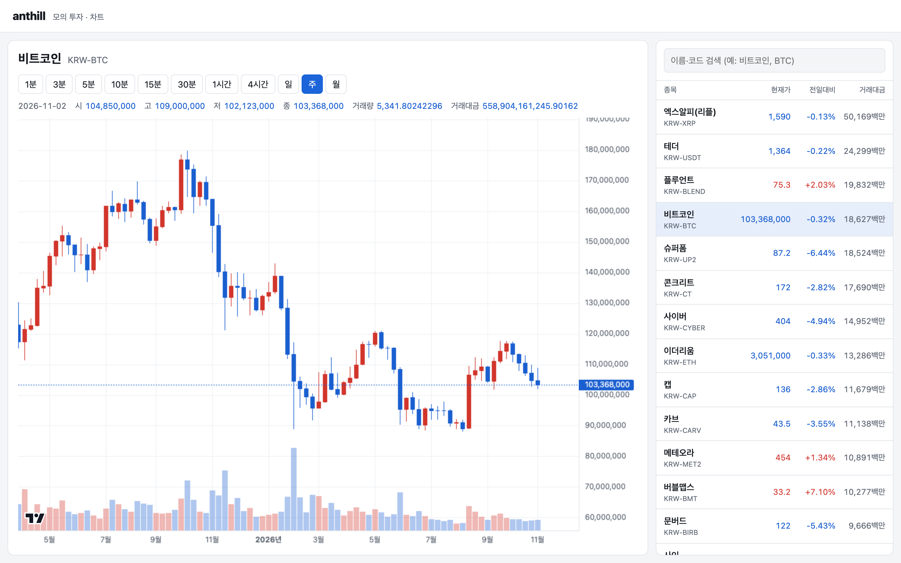
처음에는 최근 200개만 받는다. 왼쪽 끝 가까이 가면 이전 200개를 받아 앞에 붙이고, 보던 자리는 그대로다. 미리 받지 않은 구간은 그때 업비트에서 받아 맞춘다.
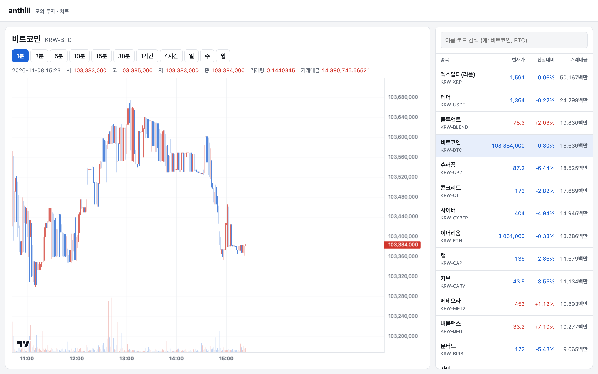
to=2026-11-08T03:02:00Z한글명·영문명·코드 어느 쪽으로도 찾는다.
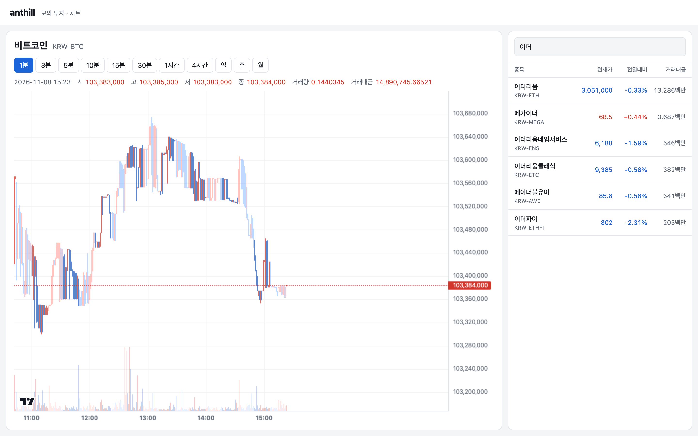
KRW-USDG는 거래가 가장 적은 종목이다. 업비트도 우리도 거래 없는 분을 건너뛰고 붙여 그리며, 11/6 20:12의 급락 꼬리가 같은 자리에 있다. 업비트 웹 차트가 빈 분을 어떻게 그리는지는 설계 때 열어 둔 질문이었고, 이 비교로 닫았다.
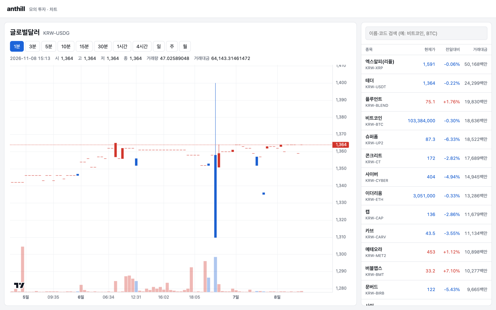
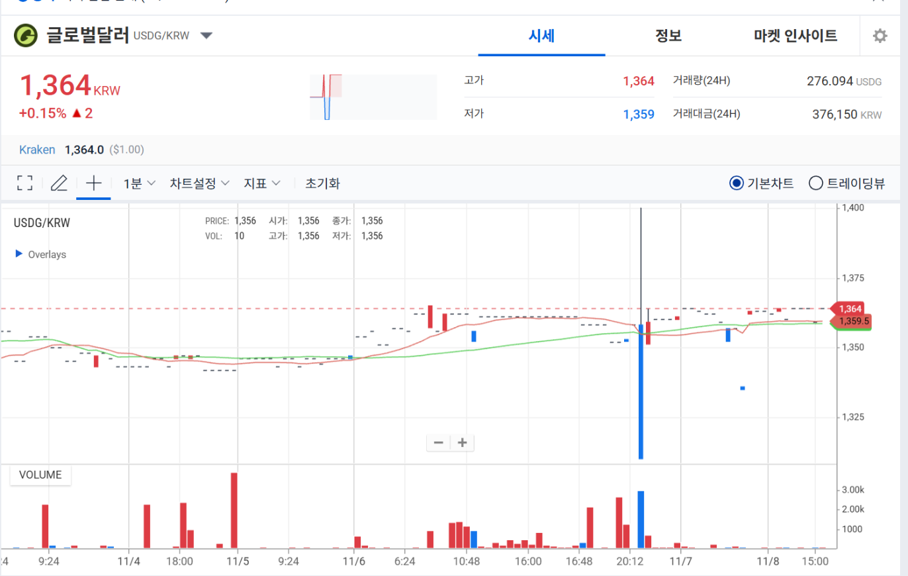
게이트웨이를 15:19:27에 멈추자 화면은 마지막 값에서 멈췄다. 15:19:48에 다시 띄우자 15:19:58에 갱신이 다시 들어왔다. 화면은 다시 붙으면서 최신 구간을 새로 받아, 끊긴 동안의 체결까지 맞췄다(거래량 2,327.99766859 → 34,112.85036357).
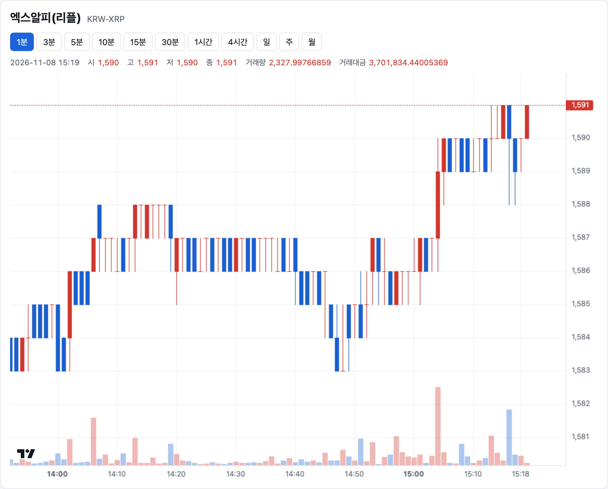
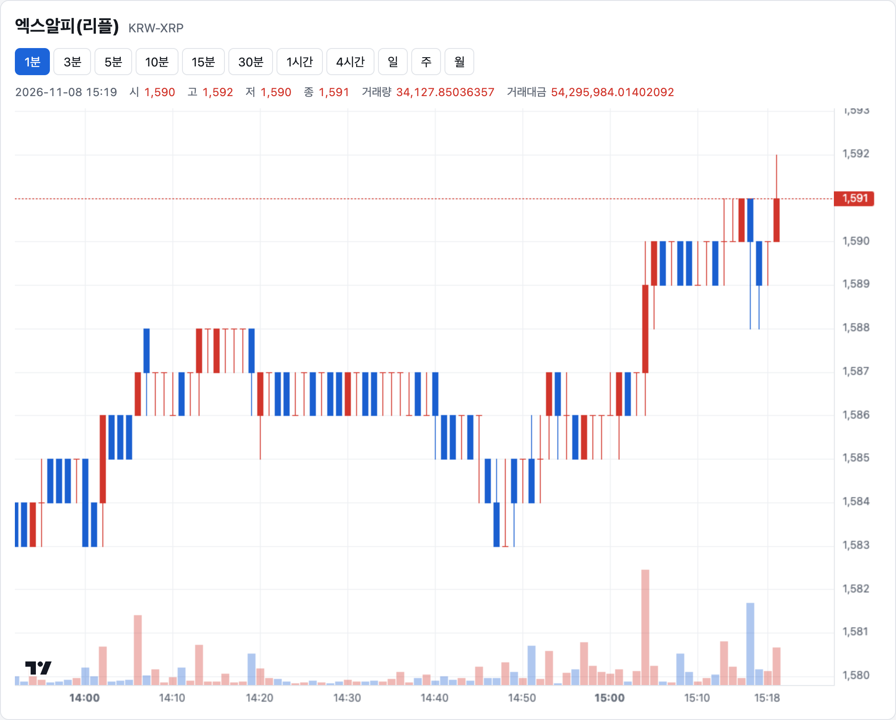
390px 폭에서는 차트 아래에 종목 목록이 오고, 가로 스크롤이 생기지 않는다.
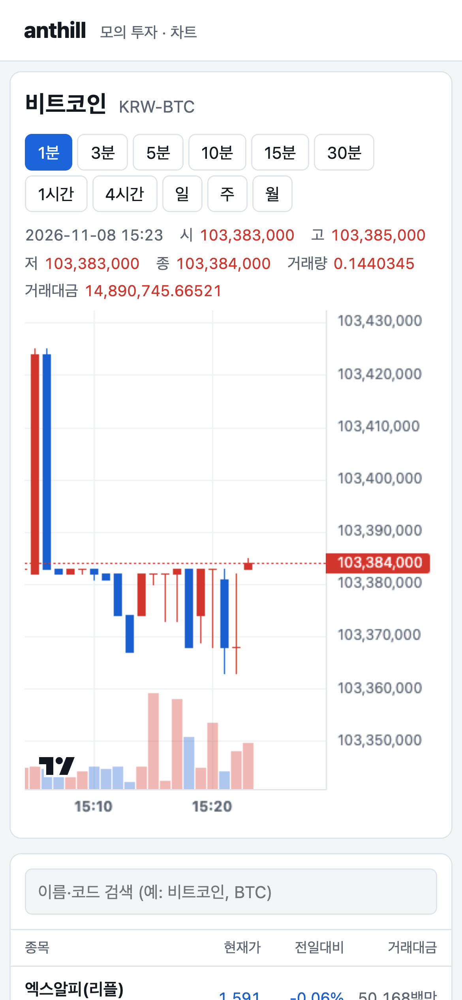
도메인별 서비스 3개로 나누고, 브라우저는 게이트웨이 하나로만 들어온다. 요청은 아래로(동기), 시세 이벤트는 위로(비동기) 흐른다. 이벤트 형식(봉투·키·eventId)은 처음부터 Kafka 기준이라 나중에는 전송만 바꾸면 되고, 주식은 같은 이벤트를 보내는 어댑터를 추가하면 붙는다.
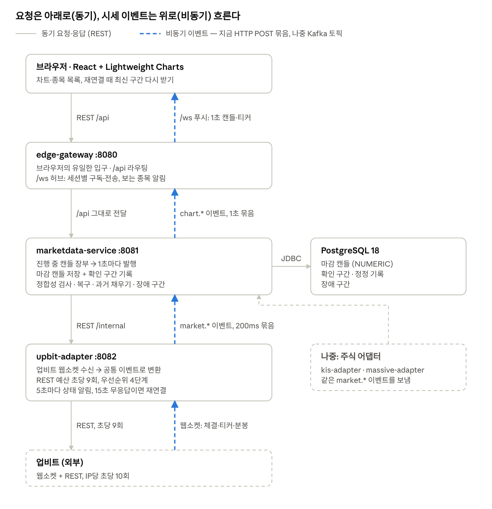
백엔드는 Kotlin + Spring(사용자 결정)이고, 나머지는 "최신 LTS, 없으면 최신 정식 버전"으로 골랐다(기준일 2026-11-07). 고를 때의 기준은 정확도(숫자·시간이 어긋나지 않을 것)와, 주식·Kafka로 넓힐 때 고칠 곳이 적을 것이다.
| 기술 (버전) | 쓴 곳 | 고른 이유 | 대신하지 않은 것 |
|---|---|---|---|
| Kotlin 2.3 + Spring Boot 4.1, JDK 25 | 서비스 3개 전부 | 언어는 사용자 결정. Boot 4.1은 최신 정식, JDK 25는 2031-09까지 지원하는 LTS | — |
| 도메인별 서비스 3개 | 전체 구조 | 업비트의 형식·호출 한도를 어댑터 안에 가둠. 주식은 어댑터만 더하면 되고, 단계별로 따로 배포할 수 있음 | 앱 하나: 소스가 늘 때마다 시세 로직이 바뀜 |
| Spring MVC + 가상 스레드 | 세 서비스의 HTTP·이벤트 처리, 업비트 웹소켓 수신, 세션별 전송 대기열 | 연결마다 스레드를 싸게 쓰면서 코드는 순서대로 읽힘 | WebFlux(리액티브): 디버깅·학습 비용 |
| 이벤트 봉투 + HTTP 묶음 전송 | 서비스 사이 비동기(시세 이벤트, 1초 차트 갱신, 보는 종목) | 지금은 REST, 나중 Kafka(사용자 결정). eventId·key를 처음부터 Kafka 기준으로 만들고 eventId로 중복을 걸러냄 | 지금 Kafka: 1단계에는 운영 부담만 늘어남 |
| java.net.http (HttpClient·WebSocket) | 업비트 REST·웹소켓, 서비스 간 호출 | JDK 내장이라 의존성이 없고, 업비트의 바이너리 프레임을 그대로 받음 | 별도 HTTP 라이브러리 |
| PostgreSQL 18, NUMERIC 컬럼 | 마감 캔들, 확인 구간, 정정 기록, 장애 구간 | 업비트는 같은 값을 자릿수만 다르게 준다. 십진수를 정확히 저장하고 값 기준으로 비교 | double: 끝자리가 바뀜 |
| JdbcClient + Flyway | 시세 서비스 저장소 | 구간 병합·잠금 SQL을 직접 보고 쓰고, 스키마는 버전으로 관리 | JPA: 쿼리가 감춰짐 |
| Spring Cloud Gateway Server MVC + 순수 WebSocket(JSON) | 게이트웨이: /api 라우팅, /ws 허브 | 라우팅과 실시간 허브를 한 앱에. 구독·푸시만 필요해 프로토콜을 단순하게 | STOMP·SSE |
| React 19 + TypeScript 7 + Vite 8 (Node 26 LTS) | 화면 | 최신 정식 버전. 개발 서버가 /api·/ws를 게이트웨이로 넘김 | — |
| Lightweight Charts 5.2.1 | 캔들·거래량·십자선·과거 스크롤 | 캔들 차트 전용이라 가볍고, 마지막 막대 갱신과 전체 다시 그리기를 나눠 써서 1초 갱신이 가벼움 | — |
| JUnit 5 + Testcontainers, Vitest | 테스트(백엔드 147개, 프론트 25개) | 실제 PostgreSQL 18과 가짜 업비트 소스로 통합 테스트 | 인메모리 DB: 운영 DB와 동작이 다름 |
| Docker Compose + Spring Boot 이미지 빌드 | 전체 실행(서비스 3개 + DB) | Dockerfile 없이 이미지를 만들고 한 명령으로 띄움 | — |
| 헤드리스 Chrome + DevTools 프로토콜 | E2E 캡처 스크립트 | 설치 없이 실제 화면을 조작·캡처하고 화면 값을 업비트 REST와 대조 | — |
1단계에서 실제로 쓴 외부 데이터는 업비트 하나다. 업비트는 REST와 웹소켓 두 길로 주는데, 2026-11-04~05에 직접 호출해 확인한 성질에 맞춰 설계했다. 문서에 없는 동작은 모두 실측으로 정했다.
| 제공 경로 | 업비트가 주는 방식 (실측) | 우리가 쓴 방법 |
|---|---|---|
| REST 캔들 (1~240분·일·주·월) | 한 번에 최대 200개. to는 그 시각 직전까지(배타적). 상장 이전 구간은 빈 배열 | 단위마다 따로 받아 저장하고 200개씩 뒤로 넘긴다. 1분봉을 합치면 거래대금이 소수점 8번째 자리에서 어긋나 합치지 않는다 |
| REST 호출 한도 | IP당 초당 10회(캔들·시세) | 어댑터가 초당 9회 예산을 두고 사용자 조회 > 복구 > 정기 검사 > 과거 채우기 순으로 나눠 쓴다 |
| 거래 없는 시간 | 그 분의 캔들이 아예 없다. KRW-OPG는 1분봉 200개가 3,494분에 흩어져 있었다 | 확인을 끝낸 구간을 따로 기록해 "거래 없음"과 "아직 안 받음"을 구분한다. 빈 분을 채우지 않는다 |
| 웹소켓 체결 | 체결 즉시, 체결 순번(sequential_id) 포함. 재연결·재구독 때는 스냅숏으로 다시 온다 | 진행 중 캔들을 체결로 갱신한다. 같은 순번은 한 번만 반영하고, 스냅숏 체결은 버린다 |
| 웹소켓 분봉 (1~240분) | 약 3초 간격(75초에 23건), 베타 기능. 같은 분이 여러 번 온다 | 우리가 반영한 체결보다 새로우면 업비트 값을 그대로 쓴다. 분이 닫힌 뒤 온 최종값은 정정으로 화면에 보낸다 |
| 웹소켓 티커 | 당일 시가·고가·저가·현재가·누적 거래량·대금. 당일 일봉과 값이 같다(자릿수만 다름) | 일봉은 티커로, 주·월봉은 마감 일봉 + 오늘 일봉의 합으로 만든다. 웹소켓 캔들은 분 단위까지만 있다 |
| 숫자 형식 | 같은 값을 다른 자릿수로 준다(41983565546.39229000과 …3922900000000000) | 원문 그대로 읽어 NUMERIC으로 저장하고, 값 기준으로 비교하고, API로도 문자열로 보낸다 |
| 웹소켓 연결 | 연결 요청 초당 5회. 메시지는 바이너리 프레임(UTF-8 JSON) | 연결 하나로 KRW 전 종목을 구독한다. 끊기면 1→30초 간격으로 다시 붙고, 15초 동안 프레임이 없으면 끊고 다시 붙는다 |
| 시각 경계 | 일봉 09:00 KST(UTC 00:00), 주봉 월요일, 월봉 1일, 240분봉은 UTC 4시간 단위 | 같은 경계로 계산하고 화면은 KST로 보여 준다 |
화면에는 웹소켓으로 빠르게 보여 주되, 마감된 캔들은 업비트 REST로 다시 받아 맞춘 뒤에야 "확인 구간"에 넣는다. 업비트 웹소켓 분봉은 베타 기능이라 그 값만으로는 맞다는 것을 증명할 수 없기 때문이다.
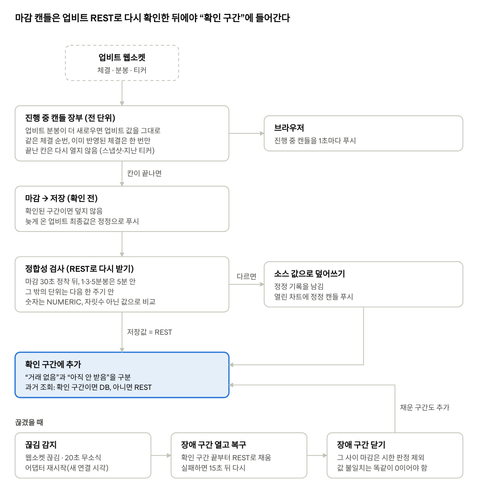
마감 직후 30초는 업비트 쪽에서 값이 아직 바뀔 수 있어 확인 구간에 넣지 않는다. 끊김은 웹소켓 끊김, 20초 무소식, 어댑터 재시작(새 연결 시각)으로 알아채고, 그 구간은 시한 판정에서 빼되 값 불일치는 똑같이 0이어야 한다.
완료 기준 7개 중 6개를 실제 업비트 데이터로 통과했고, 24시간 연속 운영 1개가 남았다. 측정은 2026-11-08 새벽(한산)과 토요일 오후(상대적으로 활발)에 로컬 맥의 Docker Compose 스택에서 했다.
| 기준 | 결과 | 근거 |
|---|---|---|
| 일치: 마감 캔들이 업비트 REST와 모든 필드·개수 일치 | 통과 | 11시간 운영 시점 대조 165개 구간, 캔들 28,446개 불일치 0. E2E에서 화면의 14:36 캔들 6개 값이 업비트 화면·REST와 같음 |
| 연속 운영: 24시간 뒤 불일치 0, 시한 초과 0 | 남음 | 맥이 06:27~15:01 KST에 잠들어 연속이 끊겼다. 그 8시간 34분은 장애 구간으로 기록됐고, 깨어난 뒤 5분 만에 다 채웠다(대조 0). 장애 구간 밖 시한 초과 17건(1분 8, 3분 8, 240분 1)은 원인 확인 중 |
| 끊김 복구: 웹소켓 5분 끊김 뒤 10분 안에 복구 | 통과 | 재연결 뒤 2분 26초에 복구 완료, 300종목 모두 빈 구간 채움, 대조 0 |
| 서비스 재시작: 어느 서비스를, 어떤 순서로 내렸다 올려도 같은 결과 | 통과 | 시세 서비스 196초, 어댑터 93초 만에 복구. 시세 서비스를 먼저 띄운 콜드 스타트와 어댑터 강제 종료도 복구, 대조 0. E2E 재연결 10초 |
| 실시간: 2초 안 반영, 마감 값 일치, 거래량 중복 없음 | 통과 (수정 후) | 토요일 오후 10분: 수정 전 마감 값 23건 중 1건 불일치 → 고친 뒤 업비트 메시지 330건 모두 2초 안(중앙값 0.53초, 최대 0.69초), 마감 값 24건 일치, 거래량 초과 0 |
| 경계: 일·주·월·240분봉 시작 시각과 KST 화면 | 통과 | 2종목 × 11단위 × 30개 = 660개 업비트 REST 비교 0, E2E 시나리오 4 |
| 과거 스크롤: 미리 받지 않은 구간도 받아와 그리고 일치 | 통과 | 9·12·20일 전 구간 1,200개 불일치 0, E2E 시나리오 5 |
대조 도구(11시간 운영 시점). 괄호 안 설명과 초 단위 반올림은 덧붙인 것이고, 원문은 docs/report/2026-11-08-e2e/verify-11h.txt에 있다. 마지막 줄이 맥 잠자기 구간이다.
run at 2026-11-08T06:23:48Z checked windows=165 candles=28446 mismatches=0 uncovered=0 overdue=0 OUTAGE 2026-11-07T17:49:00Z .. 2026-11-07T17:55:22Z (첫 시작) OUTAGE 2026-11-07T18:01:00Z .. 2026-11-07T18:05:17Z (컨테이너로 전환) OUTAGE 2026-11-07T18:12:42Z .. 2026-11-07T18:20:08Z (웹소켓 5분 강제 끊김) OUTAGE 2026-11-07T18:23:00Z .. 2026-11-07T18:26:38Z (시세 서비스 재시작) OUTAGE 2026-11-07T19:21:00Z .. 2026-11-07T19:38:34Z (콜드 스타트 시험) OUTAGE 2026-11-07T19:41:07Z .. 2026-11-07T19:43:54Z (어댑터 강제 종료) OUTAGE 2026-11-07T21:27:18Z .. 2026-11-08T06:07:05Z (맥 잠자기 06:27~15:01 KST)
실시간 비교, 토요일 오후 10분(KRW-XRP·USDT·BLEND + EURC·USDG). 수정 전에 어긋난 1건과 수정 후 결과(원문: 같은 폴더의 compare-live-10min*.txt):
수정 전 업비트 메시지 293 · 지연 291건 최대 0.77초 · 마감 23건 중 1건 불일치 · 중복 0
KRW-XRP 06:25 우리 마감: 종가 1590 거래량 72719.10868044
업비트 최종: 종가 1589 거래량 72778.18467544 (마지막 체결 59.08개 누락)
수정 후 업비트 메시지 333 · 지연 330건 중앙값 0.53초 최대 0.69초 · 마감 24건 모두 일치 · 중복 0
단위 테스트를 모두 통과한 뒤에도, 실제 스택 시험·독립 검토·E2E에서 결함 17건을 더 찾아 고쳤다. 대부분 재연결·재시작·시작 순서·마감 직전처럼 경계에서 나왔다. 고칠 때는 그 결함을 재현하는 실패 테스트를 먼저 만들었다.
| 찾은 곳 | 문제 | 고친 방법 |
|---|---|---|
| E2E(토요일 오후 실시간 비교) | 분을 닫을 때 마지막 업비트 분봉(약 3초 간격) 값을 써서, 그 뒤 체결이 빠진 마감이 나감(KRW-XRP 06:25, 59.08개 누락) | 화면에 보이는 값(업비트 값 + 그 뒤 체결)으로 닫음. 수정 후 24건 모두 일치 |
| 재검증(콜드 스타트) | 시세 서비스를 어댑터보다 먼저 띄우면 장애 구간이 영영 안 닫힘. 복구가 어댑터 REST가 열리기 전에 돌아 1,800건이 모두 실패하고도 끝남 | 시작하자마자 장애 구간을 열고, 복구는 실패가 있으면 15초 뒤 다시 함 |
| 독립 검토(치명) | 다음 분 첫 체결이 먼저 와서 앞 분을 닫은 뒤 도착한 업비트 최종값이 저장만 되고 화면에는 안 감 | 아직 확인 전이면 저장하고 화면에 정정으로 보냄 |
| 독립 검토 | 재구독 스냅숏이 끝난 캔들을 다시 "진행 중"으로 열고, 같은 체결을 두 번 더할 수 있음 | 끝난 캔들은 다시 열지 않고, 체결 스냅숏은 버림 |
| 독립 검토 | 방금 마감된 캔들을 곧바로 "확인 완료"로 굳힘. 서버 시계가 1초만 빨라도 틀린 값이 영구히 남음 | 마감 30초 뒤부터 확인 구간에 넣음 |
| 독립 검토 | 어댑터가 죽거나 연결이 조용히 멈춰도 알아채지 못함 | 어댑터가 5초마다 상태를 알리고, 20초 소식이 없으면 끊김으로 기록. 15초 동안 프레임이 없으면 다시 연결 |
| 독립 검토 | 느린 클라이언트 하나가 모든 사람의 실시간 갱신을 막음 | 세션마다 따로 보내고, 64개 넘게 밀리면 그 연결만 끊음 |
| 독립 검토 | 새 상장 종목이 검사되지 않음. 다른 사람의 과거 조회가 채운 빈 분이 열린 차트에 안 감. 오래 끊긴 차트에 빈 구간이 남음. 24시간 동안 시한을 넘긴 적이 있는지 알 수 없음 | 처음 확인부터 검사, 확인 구간 끝 이후 변경은 화면에 보냄, 이어지지 않으면 통째로 교체, 누적 카운터 |
| 실시간 비교 도구 | 과거 채우기가 저장하는 캔들까지 시청자에게 "정정"으로 보냄(1분에 16,181건) | 값이 바뀐 정정과 시청자가 보던 구간만 보냄 |
| 사용자 지적 | 캔들이 2~3px로 가늘고, 앞 화면의 확대·세로축이 다음 종목에 남음 | 기본 폭 10px에 몸통을 채워 그리고, 바꿀 때 초기화 |
| 화면 확인 | 시작 직후 시세 없는 종목에서 목록이 깨짐. 창을 줄이면 차트가 목록을 덮음 | "-" 표시, 레이아웃 수정 |
1단계를 닫으려면 잠들지 않는 환경에서 24시간 연속 운영을 확인해야 한다. 그 뒤 2단계는 주문·체결이고, 이때 서비스 사이 전송을 Kafka로 바꾼다.
/internal/**)는 지금 인증이 없다. 인터넷에서 닿지 않게 별도 포트나 네트워크 정책으로 막아야 한다.